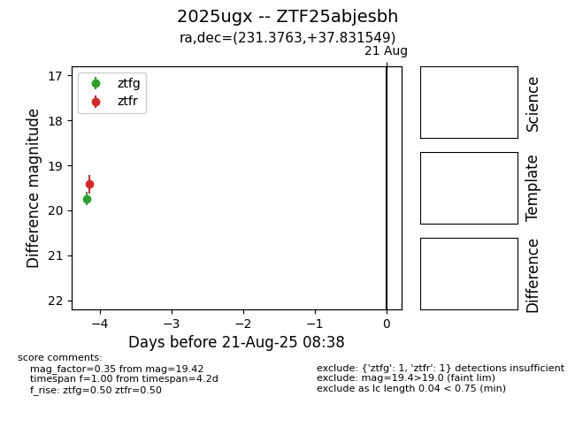

Target 2025ugx at 2025-08-21 09:29, see:
FINK: fink-portal.org/ZTF25abjesbh
Lasair: lasair-ztf.lsst.ac.uk/objects/ZTF25abjesbh
ALeRCE: alerce.online/object/ZTF25abjesbh
TNS: wis-tns.org/object/2025ugx
YSE: ziggy.ucolick.org/yse/transient_detail/2025ugx
alt names
ZTF25abjesbh (ztf,alerce)
2025ugx (tns,yse)
coordinates:
equatorial (ra, dec) = (231.3763,+37.83155)
galactic (l, b) = (61.1637,+56.06413)
photometry
last ztfg=19.74, ztfr=19.42
1 ztfg, 1 ztfr detections
